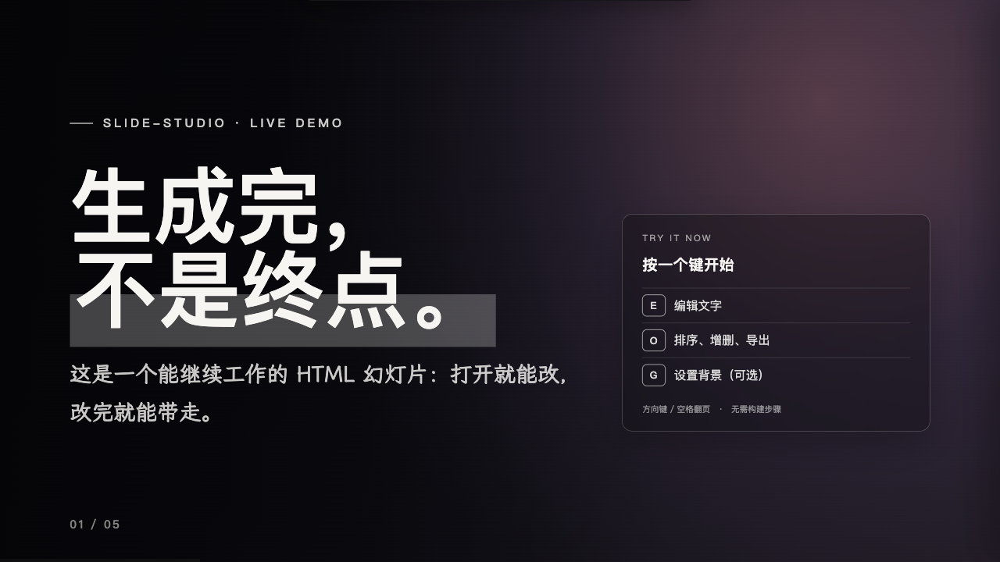

先找到值得重构的成本
理解、记忆、搬运、协调与跟进，只有形成高频、真实、可验证的业务摩擦，AI 才值得进入。
AI PRODUCT · AGENT · SYSTEMSPORTFOLIO / 2026
我是孙颖。我关注模型如何进入真实工作现场，也亲手做可以编辑、可以执行、可以验证的 AI 产品。
POINT OF VIEW
MY AI THESIS
模型提供理解与推理，真实价值来自它周围的系统：上下文、工具、任务状态、权限、恢复机制与结果验证。
我把这套方法概括为“概率内核，确定性外壳”：允许模型探索，但用工程边界约束执行，用证据证明结果。
AI TO BUSINESS
AI TO B
企业要的是可进入流程、可管理风险、可度量价值的结果。
理解、记忆、搬运、协调与跟进，只有形成高频、真实、可验证的业务摩擦，AI 才值得进入。
权限、数据、审批、异常恢复和责任归属，是企业级 AI 的产品结构，不是上线前补一页说明。
指标、Badcase、日志、产物与未覆盖范围共同说明系统做到了什么，也说明它还没做到什么。
WORKING WITH AI
CLAUDE × CLAUDE CODE
Claude 帮我澄清问题、比较路径、组织表达；Claude Code 读取真实上下文、直接修改文件、运行检查并呈现差异。人负责目标、判断与最终验收。
FRAME
GROUND
EXECUTE
VERIFY
COMPOUND
SELECTED WORK
PROJECTS / SHIPPED & EXPERIMENTAL
公开项目附可核验链接；私有原型只描述已经验证的范围。

LIVE DEMO ↗从 AI 终端，到真正理解“这个人”的 Personal Agent。
基于 OpenMinis 改造 Android 原型，探索模型、Skills、Memory、Linux/PRoot 沙箱与 Calendar、Contacts、Notification 等原生能力如何协同。核心闭环是：目标 → 上下文 → 计划 → 授权 → 执行 → 验证 → 记忆。
BOUNDARY 已完成品牌、Provider 配置、构建与公开 APK Release；没有把它表述为完整 AI OS，真机跨应用 E2E 仍属于验证边界。
在百度秒哒上做“半 DIY”小游戏复刻：保留已验证玩法，替换牌面、精灵、背景和头像，再走官方生成与发布流程。v1 完整实现斗地主模板，其余模板明确为占位。
会议与培训逐字稿 Skill：先只做低风险微修、保留提问和异议，再独立抽取关键信息与 To-do。把“保真”和“总结”拆成两个产物，避免模型自作聪明地丢失细节。
AI Native 是计算范式，AI 终端是载体，Personal Agent 是产品形态，AI Native Web 是外部能力网络，Harness 是运行与治理内核。
AI NATIVE ARCHITECTURE
ONE SYSTEM / FIVE LAYERS
AI Native 首先改变的是组织计算的方式：系统围绕人的目标、上下文和注意力运行。
身份、传感、可信屏幕、权限与执行环境。
跨会话维护目标、记忆、关系和未完成事项。
API、MCP、结构化工具与受控浏览器能力。
上下文、状态、路由、审批、重试、恢复与评测。
把产品判断放进真实设备边界里验证。
THE VIEW
HOW I KEEP UP
论文、Release、官方文档、真实仓库和作者原话。
把趋势变成可运行原型，观察它在哪些条件下失效。
区分已确认、方向性信号、未覆盖，拒绝拿 Demo 代替结论。
把观察带回项目，用真实反馈持续更新。
EXPERIENCE
SELECTED EXPERIENCE
只保留与 AI 产品、Agent、评测和交付直接相关的经历；客户名称与个人信息做了必要收敛。
BAIDU · SOLUTION ENGINEERING
参与手机与智能穿戴行业的 AI 方案、POC 与 Badcase 闭环。曾基于千帆 AppBuilder 重构多模态广告质量工作流，把任务拆成文案、视觉、落地页与相关性四类指标；经 Prompt、规则与样本迭代，相关性准确率较原方案提升 19 个百分点，并支持项目中标。
BYTEDANCE · DATA SCIENCE / INTELLIGENT TOOLS
参与智能审核平台的多模态 Prompt 自动优化，结合正负样本反馈迭代 MCTS 策略，部分场景效果最高提升 13 个百分点；参与 RAG 知识问答 Agent 的任务拆解、意图识别、检索与测试，标准化测试准确率达到 95%。
CONTINUE THE TRACE